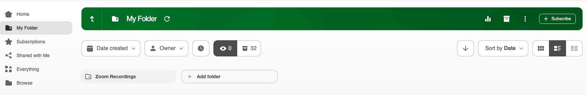

Where to look
Panopto → My Folder → Zoom Recordings

Find your recording
Sign in to PanoptoOpen Shenandoah Panopto, choose Canvas, and complete sign-in if prompted.
Select My FolderUse the left navigation to open your personal folder.
Open Zoom RecordingsSelect the Zoom Recordings subfolder shown above.
Locate your meetingLook for the recording by meeting title and date, then open it to review.
Recording not there?
If it has just finished, allow time for the transfer and processing, then check again. If you still cannot find it, contact the Help Desk with the meeting title, date, and host account.
Before sharing
Review the recording and confirm its Panopto viewing permissions match the intended audience before sending the link.
Zoom recordings, captions & transcripts
Find the recording controls and learn about meeting captions.
Open Zoom recording helpManage in PanoptoPanopto Help
Get help signing in with Canvas and preparing recordings.
Open Panopto Help